Herencia y polimorfismo
Producto reúne los atributos comunes. Electronico y Libro implementan calcular_precio_final() con sus propias reglas. Así, el menú puede llamar al mismo método al listar ambos tipos.
BITÁCORA DE APRENDIZAJE / SEMANA 10
Un gestor de productos en Python y una API de inventario con Express y MySQL. Dos prácticas para modelar datos, validarlos y decidir cómo responder cuando una operación falla.
Explorar mis trabajos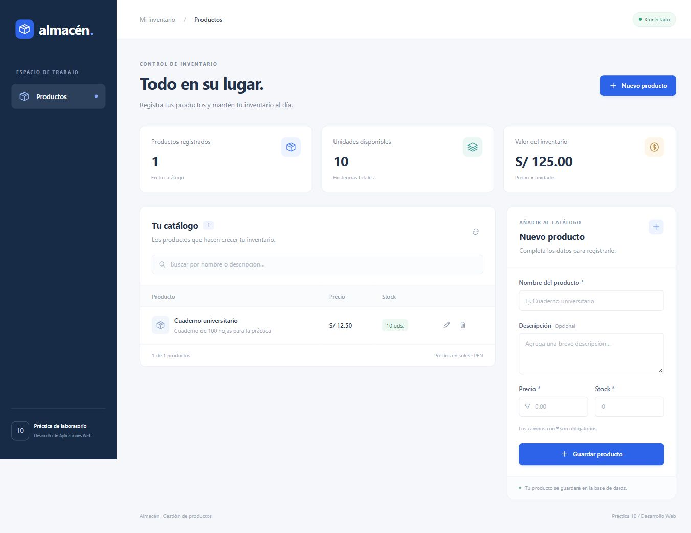
En la semana 9 seguí una petición desde el formulario hasta el servidor. Esta semana trabajé primero las reglas de un producto en Python y después gestioné un inventario mediante peticiones HTTP y una base de datos.
Junto con Ángel Tocas Anglas desarrollé un gestor por consola para registrar electrónicos y libros, listar sus precios finales, buscar productos y actualizar el stock.
EXPLORAR EL CÓDIGOPRACTICA-SEM-10-AGUILAR1Producto reúne los atributos comunes. Electronico y Libro implementan calcular_precio_final() con sus propias reglas. Así, el menú puede llamar al mismo método al listar ambos tipos.
La guía propone usar @property y setters para controlar valores como el precio y el stock. Las pruebas muestran cómo el menú presenta ValidationError ante un precio negativo y NotFoundError si el identificador no existe.
3 capturas. Abre una y recorre la galería con las flechas.
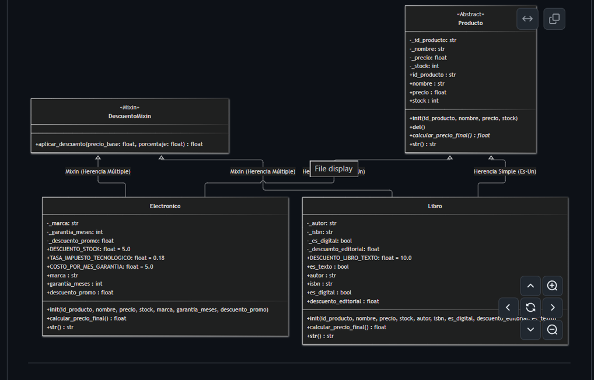
Diagrama de Producto, Electrónico, Libro y DescuentoMixin, con los atributos y métodos de cada clase.
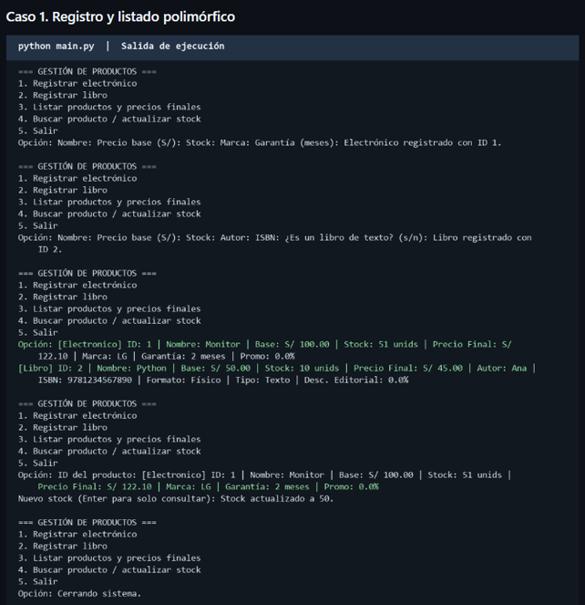
La consola muestra el registro de un monitor y un libro, el cálculo de sus precios finales y una actualización de stock.
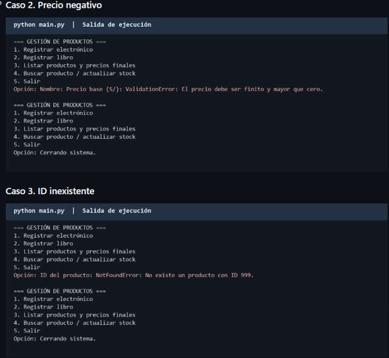
El menú se recupera después de un ValidationError por precio negativo y un NotFoundError por un identificador inexistente.
En la práctica individual trabajé con Node.js y Express para exponer un CRUD de productos respaldado por MySQL. La interfaz de Almacén presenta el catálogo y el formulario de registro.
EXPLORAR EL CÓDIGOSemana_10_practica_2Las rutas vinculan cada método HTTP con su operación. Los controladores consultan o modifican la tabla productos y devuelven el resultado con un código HTTP.
mysql2/promise permite compartir un pool de conexiones. Los controladores usan await para ejecutar consultas y pasan los datos de entrada como parámetros en las operaciones que los necesitan.
9 capturas. Abre una y recorre la galería con las flechas.
La interfaz de inventario muestra indicadores, un catálogo y un formulario para registrar productos.
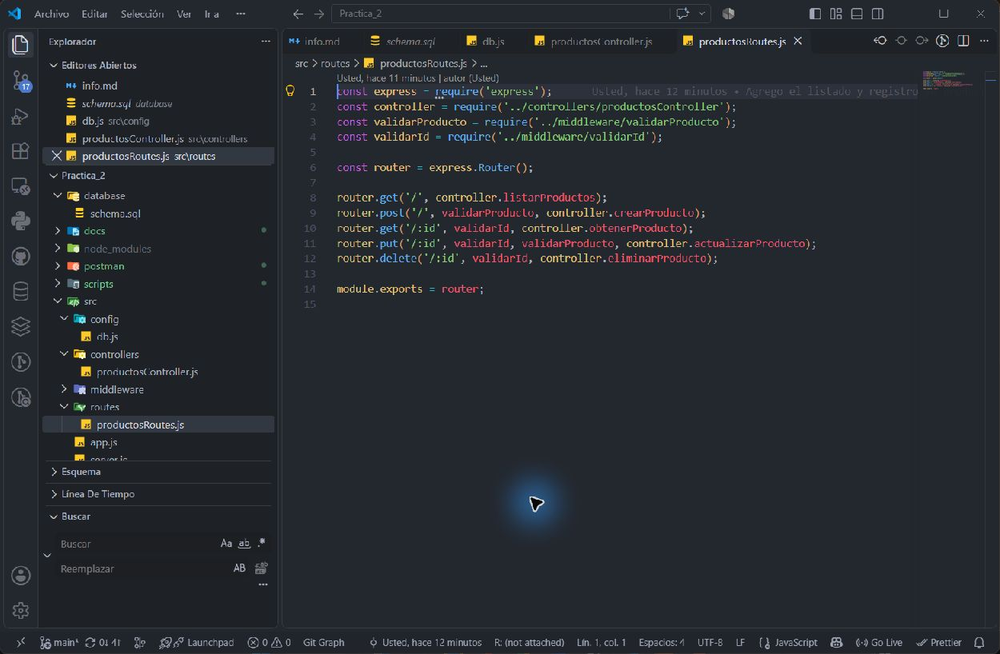
El router conecta GET, POST, PUT y DELETE con los controladores y los validadores correspondientes.
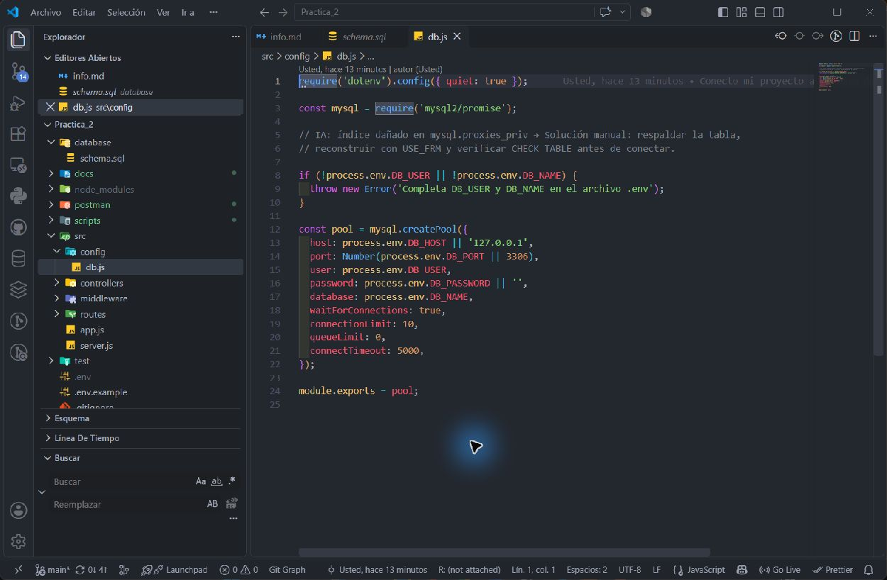
La conexión se configura con mysql2/promise y lee los parámetros de la base de datos desde variables de entorno.
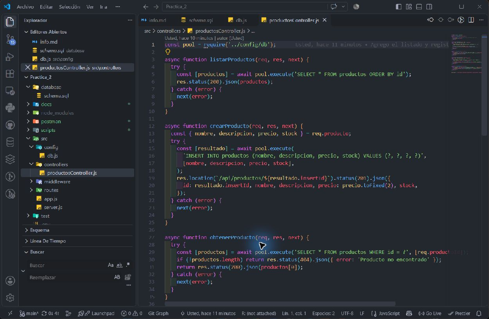
El controlador muestra las funciones para listar, registrar y buscar productos por identificador.
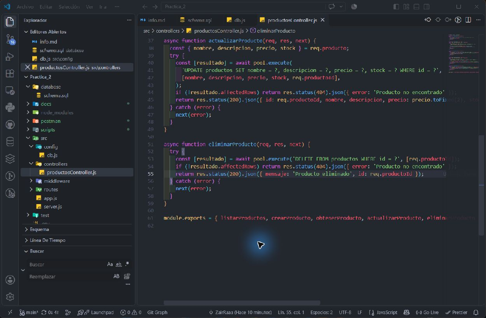
El controlador usa consultas con parámetros y comprueba si la operación afectó algún registro.
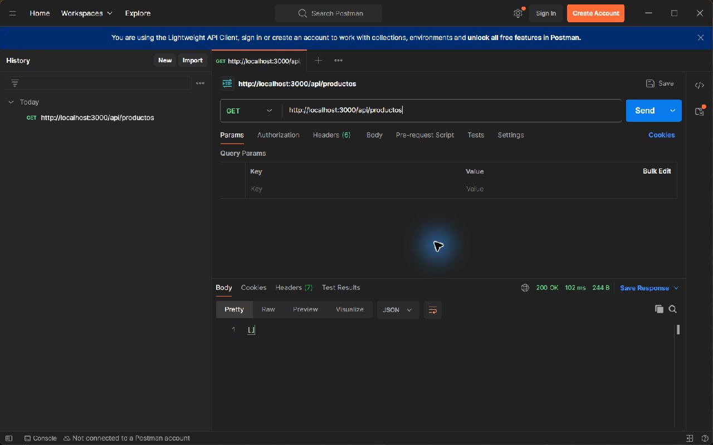
Postman muestra una consulta GET exitosa que devuelve una lista vacía en JSON.
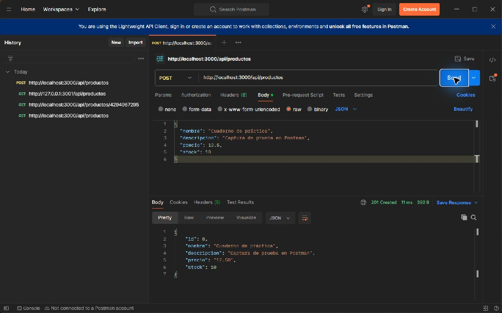
Postman envía un producto por POST y recibe los datos del registro creado.
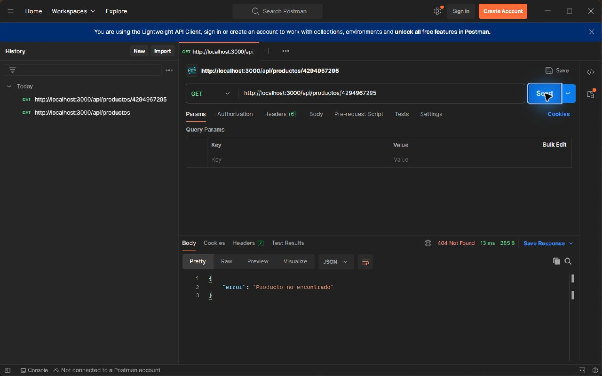
La consulta por un identificador sin coincidencias devuelve 404 Not Found.
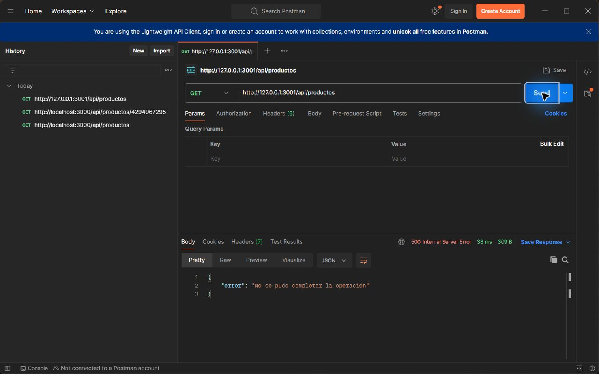
Postman recibe 500 Internal Server Error y un mensaje genérico en JSON.
Las capturas de Postman documentan las consultas y el registro de un producto. La actualización y eliminación aparecen en el código del controlador.
| Método | Operación | Evidencia |
|---|---|---|
| GET | Listar productos o buscar por /:id. | Postman muestra 200 al listar y 404 para un ID inexistente. |
| POST | Registrar un producto con datos JSON. | Postman muestra 201 y el producto creado. |
| PUT | Actualizar el producto de /:id. | La captura del controlador muestra la consulta de actualización. |
| DELETE | Eliminar el producto de /:id. | La captura del controlador muestra la consulta de eliminación. |
La prueba adicional con 500 registra la respuesta genérica que recibe el cliente ante un fallo interno.
El polimorfismo me permitió conservar una sola forma de listar productos y dejar las reglas de precio en la clase que conoce cada tipo.
En consola, las excepciones separan un precio inválido de una búsqueda sin resultados. En la API, el código HTTP y el cuerpo JSON ayudan al cliente a decidir cómo reaccionar.
Postman me permitió revisar el estado HTTP y el cuerpo de la respuesta de forma independiente de la interfaz del inventario.
Entrada elaborada a partir de la guía de la semana y las 12 capturas de ambos trabajos.